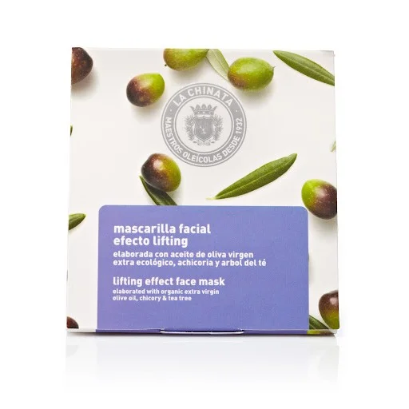

Cosmetic Made in Spain
聯繫我們
產品展示
Mascarilla de tensión para adelgazar la cara

33 Kr Content: 5 x 8 ml
La mascarilla de efecto tirón la chinata está elaborada a través de una fórmula basada en sales y lodos ricos en oligoelementos que producen una alta hidratación y una piel suave. Además, contiene un agente de tensión que actúa sobre las arrugas. También conocido como aceite de oliva virgen extra (evoo), es un agua caliente concentrada y un complejo hecho de extractos que pueden hidratar la piel. Por un lado, EVOO es una boca de incendios natural que puede reparar la función de barrera de la piel, al tiempo que aumenta los efectos antienvejecimiento y antioxidante. Al mismo tiempo, las características del agua caliente se suman para tener un efecto calmante y suavizante, que es muy adecuado para la piel sensible y rojiza. El complejo actúa como elemento compacto en áreas como el contorno del ojo y ayuda a la circulación sanguínea y al metabolismo de la piel. Las mascarillas han reforzado una acción concreta y han dado resultados inmediatos. Por eso es importante elegir los productos que mejor se adapten a cada una de nuestras necesidades de la piel, ya que se adaptan a las necesidades específicas.
Vida Copyright © 2024 All rights reserved